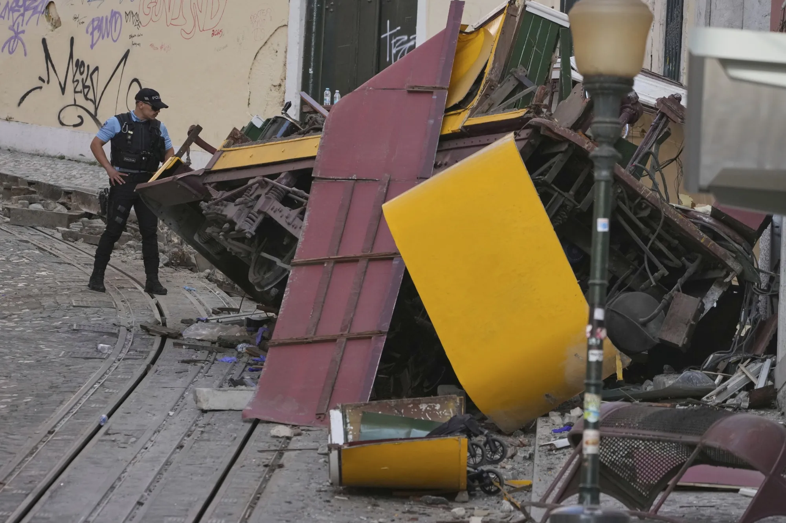

Emergency services in Lisbon have confirmed that a tram derailment resulted in the deaths of 16 people and left 23 others with injuries ranging from minor to critical. Witnesses described scenes of panic and confusion as passengers struggled to escape the wreckage.
Survivors recalled the overwhelming fear as the tram lost control, with some believing they would not make it out alive. Authorities are investigating the cause of the crash, and tributes have been pouring in from across Portugal for the victims and their families.